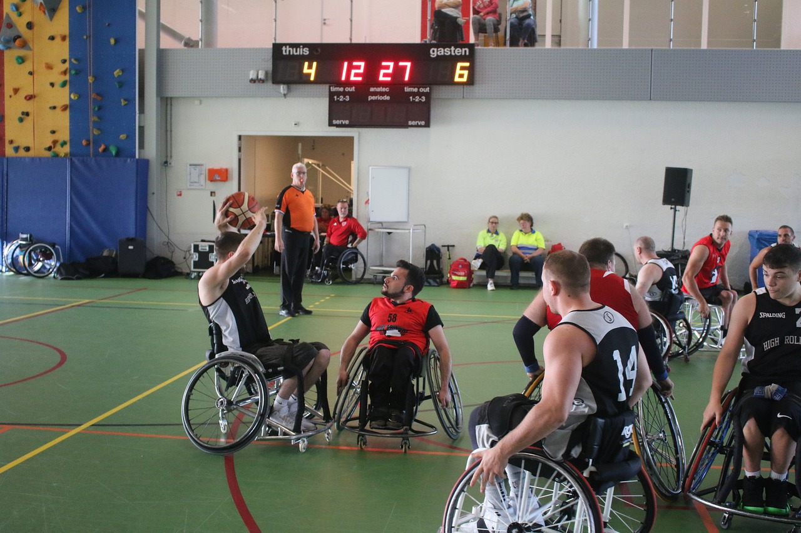

fuente: Pixabay
Plantilla
| Dorsal |
Nombre y Apellido |
Edad |
Altura |
Posición |
| 3 |
Oleksandr Vasylenko |
30 |
1.77 |
Pivot |
| 7 |
Rustem Levchenko |
26 |
1.59 |
Alero |
| 10 |
Vladlen Sydorenko |
22 |
1.89 |
Pivot |
| 21 |
Bronislav Kharchenko |
18 |
2.01 |
Base |
| 22 |
Markiyan Diachenko |
21 |
1.90 |
Base |
| 42 |
Yuriy Karpenko |
29 |
1.84 |
Alero |
| 70 |
Kazymyr Shvets |
40 |
1.75 |
Alero |
| 99 |
Zinoviy Kulyk |
28 |
1.82 |
Pivot |
Calendario
| Fecha |
Local |
Visitante |
Marcador |
| 05/11/2022 |
Uzhgorod |
Lviv Basketball |
80-99 |
| 12/11/2022 |
Lviv Basketball |
Lutsk |
110-102 |
| 19/11/2022 |
Kamenets-Podolski |
Lviv Basketball |
80-85 |
| 27/11/2022 |
Lviv Basketball |
Vinnytsya |
90-72 |
| 03/12/2022 |
Zaporiyia |
Lviv Basketball |
|
| 10/12/2022 |
Lviv Basketball |
Uzhgorod |
|
| 17/12/2022 |
Lutsk |
Lviv Basketball |
|
Estadísticas
| Dorsal |
Nombre y Apellido |
Puntos |
Rebotes |
Asistencias |
| 3 |
Oleksandr Vasylenko |
8 |
4 |
2 |
| 7 |
Rustem Levchenko |
14 |
4 |
6 |
| 10 |
Vladlen Sydorenko |
13 |
3 |
2 |
| 21 |
Bronislav Kharchenko |
4 |
5 |
3 |
| 22 |
Markiyan Diachenko |
19 |
11 |
9 |
| 42 |
Yuriy Karpenko |
3 |
1 |
0 |
| 70 |
Kazymyr Shvets |
10 |
7 |
6 |
| 99 |
Zinoviy Kulyk |
13 |
12 |
2 |